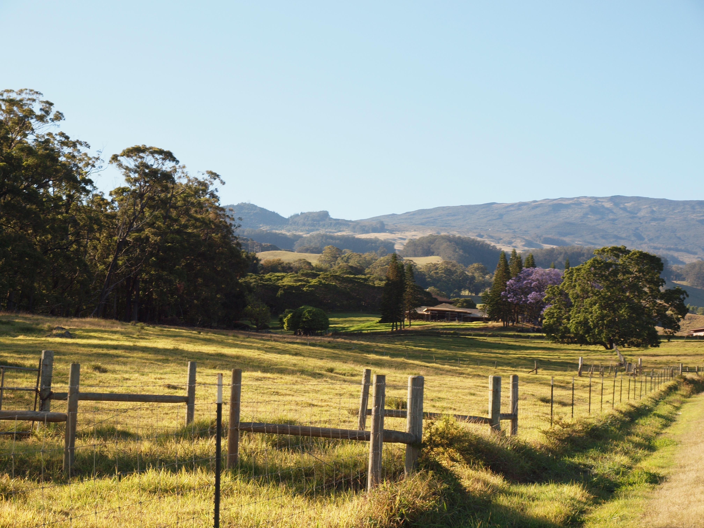

This is the heading
well, all most every type of dogs i have seen in my life and i am very familier with all kinds of dog wich we can find here in our state, it may be american german russian african brazilian japanese etc.well, all most every type of dogs i have seen in my life and i am very familier with all kinds of dog wich we can find here in our state, it may be american german russian african brazilian japanese etc.well,well, all most every type of dogs i have seen in my life and i am very familier well, all most every type of dogs i have seen in my life and i am very familier with all kinds of dog wich we can find here in our state, it may be american german russian african brazilian japanese etc.well, all most every type of dogs i have seen in my life and i am very familier with all kinds of dog wich we can find here in our state, it may be american german russian african brazilian japanese etc.well,well, all most every type of dogs i have seen in my life and i am very familier well, all most every type of dogs i have seen in my life and i am very familier with all kinds of dog wich we can find here in our state, it may be american german russian african brazilian japanese etc.well, all most every type of dogs i have seen in my life and i am very familier with all kinds of dog wich we can find here in our state, it may be american german russian african brazilian japanese etc.well,well, all most every type of dogs i have seen in my life and i am very familier well, all most every type of dogs i have seen in my life and i am very familier with all kinds of dog wich we can find here in our state, it may be american german russian african brazilian japanese etc.well, all most every type of dogs i have seen in my life and i am very familier with all kinds of dog wich we can find here in our state, it may be american german russian african brazilian japanese etc.well,well, all most every type of dogs i have seen in my life and i am very familier
this is the second heading
well, all most every type of dogs i have seen in my life and i am very familier with all kinds of dog wich we can find here in our state, it may be american german russian african brazilian japanese etc.well, all most every type of dogs i have seen in my life and i am very familier with all kinds of dog wich we can find here in our state, it may be well, all most every type of dogs i have seen in my life and i am very familier with all kinds of dog wich we can find here in our state, it may be american german russian african brazilian japanese etc.well, all most every type of dogs i have seen in my life and i am very familier with all kinds of dog wich we can find here in our state, it may be well, all most every type of dogs i have seen in my life and i am very familier with all kinds of dog wich we can find here in our state, it may be american german russian african brazilian japanese etc.well, all most every type of dogs i have seen in my life and i am very familier with all kinds of dog wich we can find here in our state, it may be well, all most every type of dogs i have seen in my life and i am very familier with all kinds of dog wich we can find here in our state, it may be american german russian african brazilian japanese etc.well, all most every type of dogs i have seen in my life and i am very familier with all kinds of dog wich we can find here in our state, it may be
well, all most every type of dogs i have seen in my life and i am very familier with all kinds of dog wich we can find here in our state, it may be american german russian african brazilian japanese etc.well, all most every type of dogs i have seen in my life and i am very familier with all kinds of dog wich we can find here in our state, it may be american german russian african brazilian japanese etc.well,well, all most every type of dogs i have seen in my life and i am very familierwell, all most every type of dogs i have seen in my life and i am very familier with all kinds of dog wich we can find here in our state, it may be american german russian african brazilian japanese etc.well, all most every type of dogs i have seen in my life and i am very familier with all kinds of dog wich we can find here in our state, it may be american german russian african brazilian japanese etc.well,well, all most every type of dogs i have seen in my life and i am very familierwell, all most every type of dogs i have seen in my life and i am very familier with all kinds of dog wich we can find here in our state, it may be american german russian african brazilian japanese etc.well, all most every type of dogs i have seen in my life and i am very familier with all kinds of dog wich we can find here in our state, it may be american german russian african brazilian japanese etc.well,well, all most every type of dogs i have seen in my life and i am very familier